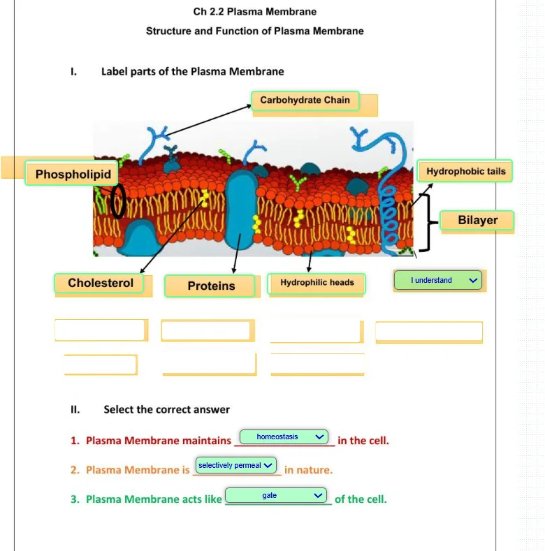
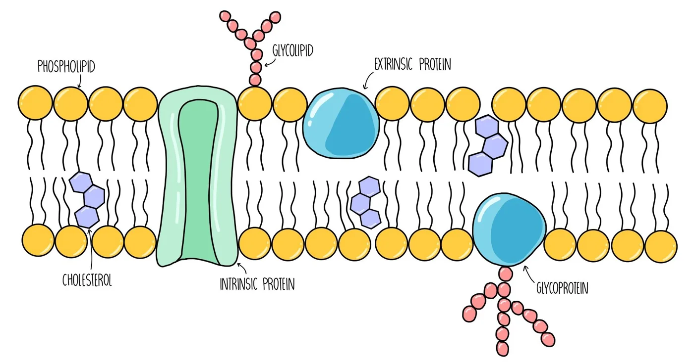
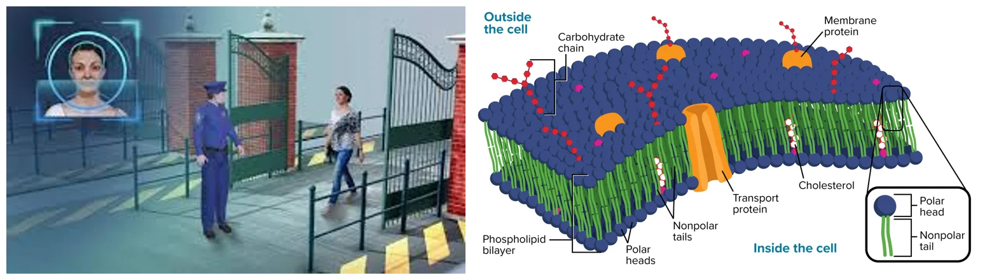
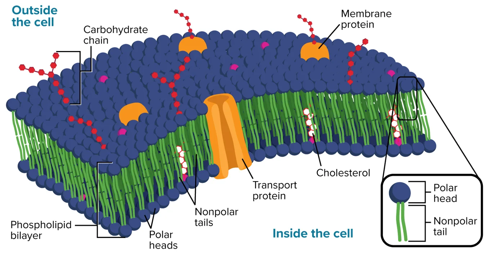
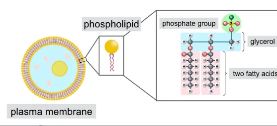
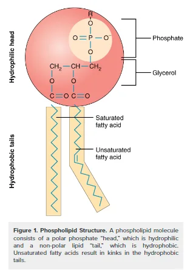
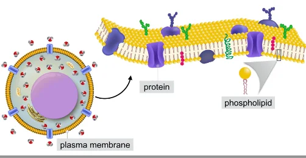
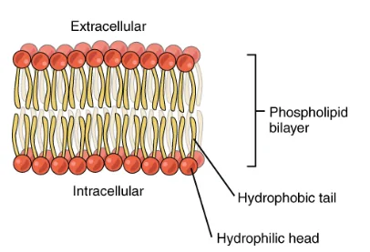
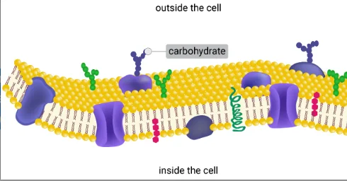

The Plasma Membrane
Structure of the plasma membrane
 UAE NATIONAL CHARTER · الميثاق الوطني
UAE NATIONAL CHARTER · الميثاق الوطنيMeet your UAE Values Team
Five friends will coach you through today's membrane mission. Tap a character to discover their job today!
Lesson map · 45 minutes · tap any activity
Objectives, success criteria & key words
Describe the structure of the plasma membrane.
- Foundation: I can name the four components of the plasma membrane and the three parts of a phospholipid.
- Secure: I can describe the phospholipid bilayer: polar heads face water, nonpolar tails face inward.
- Advanced: I can explain the roles of proteins, cholesterol and carbohydrates, and why the bilayer lets the membrane exist in water.
Starter + attendance on the LMS

- Mark your attendance on the LMS and settle in your seat.
- Open the starter: Label the parts of the plasma membrane.
- Recap: name the two types of cells from last lesson and one difference between them.
- Then answer the right-or-wrong questions on the next slide on your own.
Pre-assessment: look at the membrane, right or wrong?

Hook: why is the plasma membrane the gatekeeper of the cell?

At the Hatta border crossing…
Officers check every passport and visa before anyone can enter or leave the UAE. Some travellers pass straight through; others are stopped.
Essential question: the plasma membrane works like the UAE border security system. Why is it called the gatekeeper of the cell? What is it made of?
2. What kinds of macromolecules did you notice?
3. What is the “passport check” of a cell?
Video: structure of the plasma membrane (narrated, subtitles)
Activity 1: who does what in the membrane?
Is each clue about a PHOSPHOLIPID, a PROTEIN, CHOLESTEROL or a CARBOHYDRATE? Tap to choose (tap again to change), then check.

Activity 2: the border post (the unconventional version)
The plasma membrane is like the UAE border. The wall and fence keep the inside separate. Gates let approved things through. Officers read signals and passports. Every traveller wears an ID badge, and flexible supports keep the fence from cracking.
The plasma membrane is a thin outer covering found in all cells. It separates the inside of the cell from the outside environment, and is made mostly of phospholipids and proteins, with cholesterol and carbohydrates.
Textbook: what is a phospholipid made of?



Textbook: the phospholipid bilayer

Proteins, cholesterol and carbohydrates

Simulation: phospholipids in water
Simulation: membrane explorer
Explore: tap a component to light it up and read its job. Quiz mode: a part glows; can you name it? Score 6 in a row to become a Membrane Master!
Simulation: which orientation is the real bilayer?
Heads (●) are polar and love water. Tails (〰) are nonpolar and avoid water. There is water outside the cell and water inside the cytoplasm.
Lab: oil, water and soap (why tails hide from water)
- Add 2 spoons of oil to the water. Stir, then wait 30 seconds.
- Record what happens to the oil.
- Add a few drops of soap and stir gently.
- Record what happens now. Soap molecules, like phospholipids, have a water-loving head and a water-hating tail.
| Step | What I see | Why? |
|---|---|---|
| Oil + water | the oil separates and floats | oil is nonpolar, water is polar |
| + soap | tiny oil droplets spread in the water | tails grab oil, heads face water |
| Link | like the fatty-acid tails | keeps its tails away from water: a bilayer |
Formative check
Tap an answer. Wrong? Read the hint and try again!
Order the layers: from outside the cell to inside
Travel through the membrane! Tap from the outside to the inside. Tap a numbered one to undo.
Plasma membrane worksheet (1/2)
B. Backbone holding the head and tails together
C. Lets some substances through but not others
D. Polar part of the phospholipid head
E. Two layers of phospholipids
Plasma membrane worksheet (2/2)
| Clue | Component |
|---|---|
| Makes the bilayer, with heads facing water | |
| Receptor that transmits signals into the cell | |
| Contributes to the fluidity (flexibility) of the membrane | |
| Helps cells identify chemical signals | |
| Anchors the membrane and gives the cell its shape | |
| Made of glycerol, a phosphate group and two fatty acids |
Explain how the arrangement of phospholipids allows the plasma membrane to exist in a watery environment.
✓ Phospholipids have polar (hydrophilic) heads and nonpolar (hydrophobic) tails.
✓ They form a bilayer: the heads face the water outside and inside the cell.
✓ The tails face each other in the middle, away from water, which keeps the inside and outside of the cell separate.
Differentiated tasks: Green · Blue · Orange
Green · Mandatory ★
- Name the four components of the plasma membrane.
- Label a phospholipid: head, tails, glycerol, phosphate.
1. Phospholipids, proteins, cholesterol, carbohydrates.
2. Head = phosphate group (polar) with glycerol; tails = two fatty acids (nonpolar).
Blue · Less mandatory ★★
- Describe the phospholipid bilayer.
- Give two jobs of membrane proteins. Then try the Wordwall diagram.
1. Two layers of phospholipids: polar heads face water outside and inside, nonpolar tails face inward.
2. Transport substances; receive signals (receptors); support the membrane.
Orange · Optional ★★★
- Explain why the membrane would fall apart without its bilayer structure.
- Explain the jobs of cholesterol and carbohydrates.
1. Nonpolar tails would touch water; the bilayer hides them and keeps inside and outside separate.
2. Cholesterol stops tails sticking together (flexibility); carbohydrates give identity and help identify chemical signals.
Summative assessment: Membrane Master quiz
Exit ticket: why is it the gatekeeper of the cell?
The plasma membrane is a PHOSPHOLIPID BILAYER: polar heads face the water on both sides and nonpolar tails hide in the middle, so it does not dissolve and keeps inside and outside separate. PROTEINS act as gates and signal receivers, CHOLESTEROL keeps it flexible, and CARBOHYDRATES are its ID badges. Like the officers at Hatta, it controls what enters and leaves: the gatekeeper of the cell.
Foundation: I can name the four components and the three parts of a phospholipid.
Secure: I can describe the phospholipid bilayer.
Advanced: I can explain the roles of proteins, cholesterol and carbohydrates.
I can explain why the membrane can exist in water.
Which value did you show today?
Tap the character whose value you showed in this lesson. Then tell your partner one real example!
Small barrier, big protector
A membrane thinner than a soap bubble guards every cell in your body. Guard your learning the same way: let in curiosity, keep out giving up. Dream big and work hard!